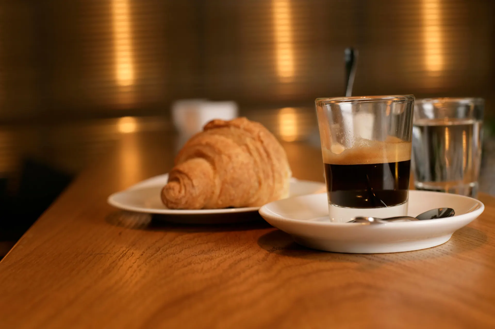
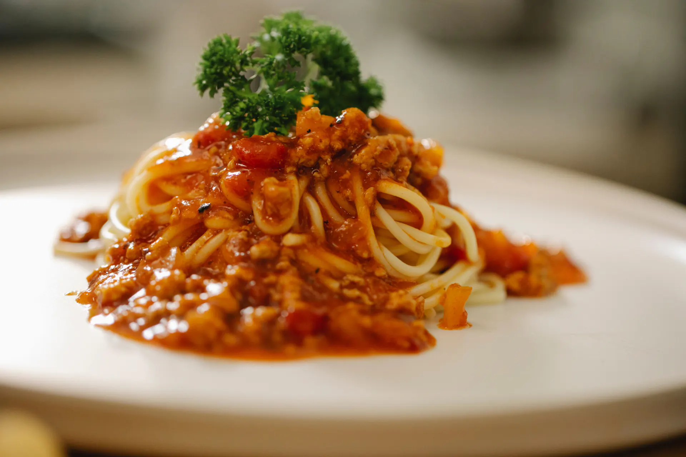
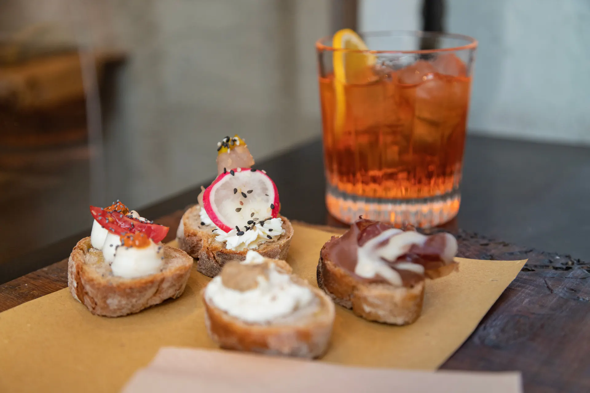
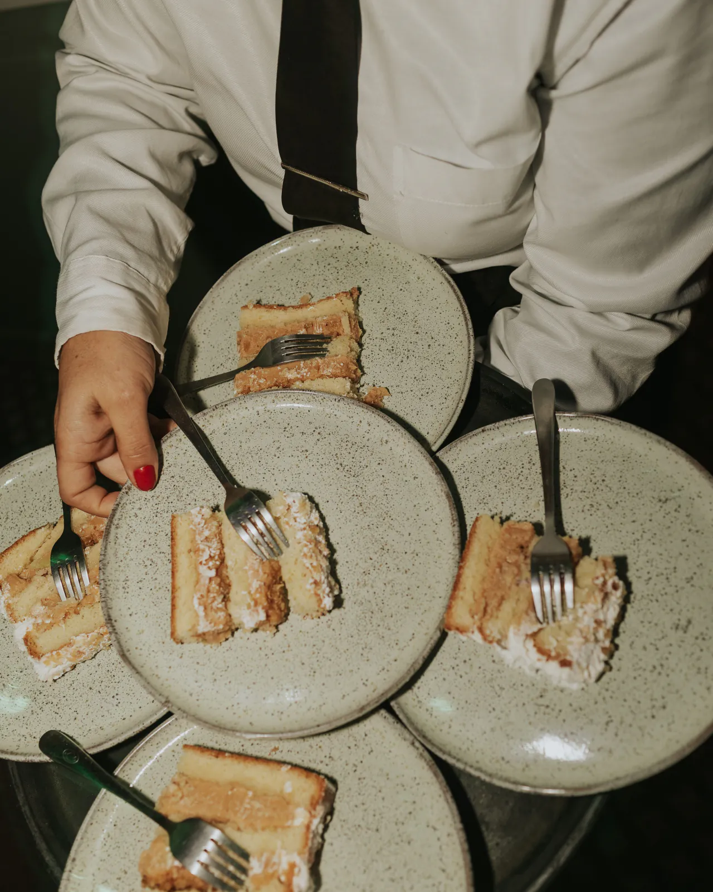

Di fronte alla stazione di Torre de' Passeri
Colazione, pausa pranzo e aperitivo
Colazione
Il primo caffè, al banco
Espresso, cappuccino e cornetti per chi parte presto e per chi si concede due minuti in più. Dolci da banco, ogni mattina.
Pausa pranzo
Un piatto caldo, a due passi dal treno
Per chi lavora in zona e per chi passa dalla stazione: primi e secondi del giorno, serviti senza perdere tempo. Prenota il tavolo con un messaggio.
Il menù del pranzo cambia ogni giorno: questi sono i piatti che prepariamo più spesso. La disponibilità varia in base al giorno: chiedi al banco o scrivici su WhatsApp.
Primi
Secondi
Foto indicative
Aperitivo
Quando il sole scende, si apre il tagliere.
Spritz, calici e cocktail, con taglieri di salumi e formaggi, bruschette e stuzzichini. Il momento più bello della giornata, da dividere con gli amici.
Tocca una foto per vederla grande

Zeta Catering
La stessa cucina, per la tua festa
Matrimoni, comunioni, compleanni e aperitivi aziendali: con Zeta Catering la nostra cucina arriva anche fuori dal bar.
Recensioni di esempio
Testi di esempio: qui andranno le recensioni vere.
Orari e dove siamo
Proprio di fronte alla stazione
Proprio di fronte alla stazione di Torre de' Passeri: comodo per chi arriva in treno.
Orari
Zanzibar
Viale della Repubblica 72 bis, 65029 Torre de' Passeri (PE)
Di fronte alla stazione di Torre de' Passeri
Caricando la mappa, Google riceverà alcuni dati di navigazione.
Sui social
Seguici: ogni giorno qualcosa di nuovo
Il piatto del giorno, i dolci appena sfornati, l'aperitivo della sera: lo raccontiamo ogni giorno.
Video di esempio: qui andranno i video del bar.